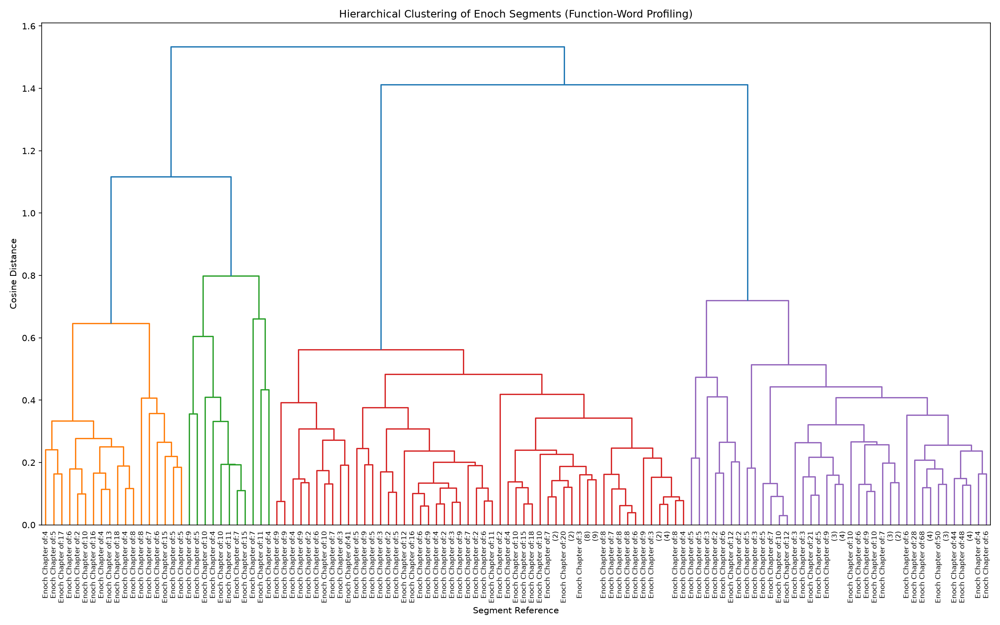
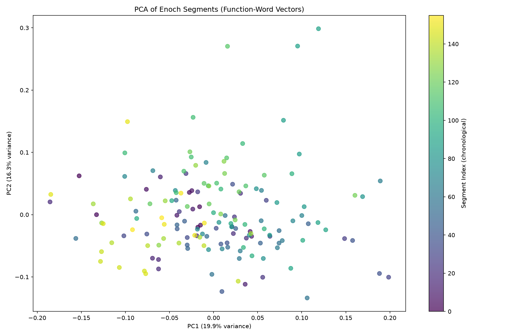
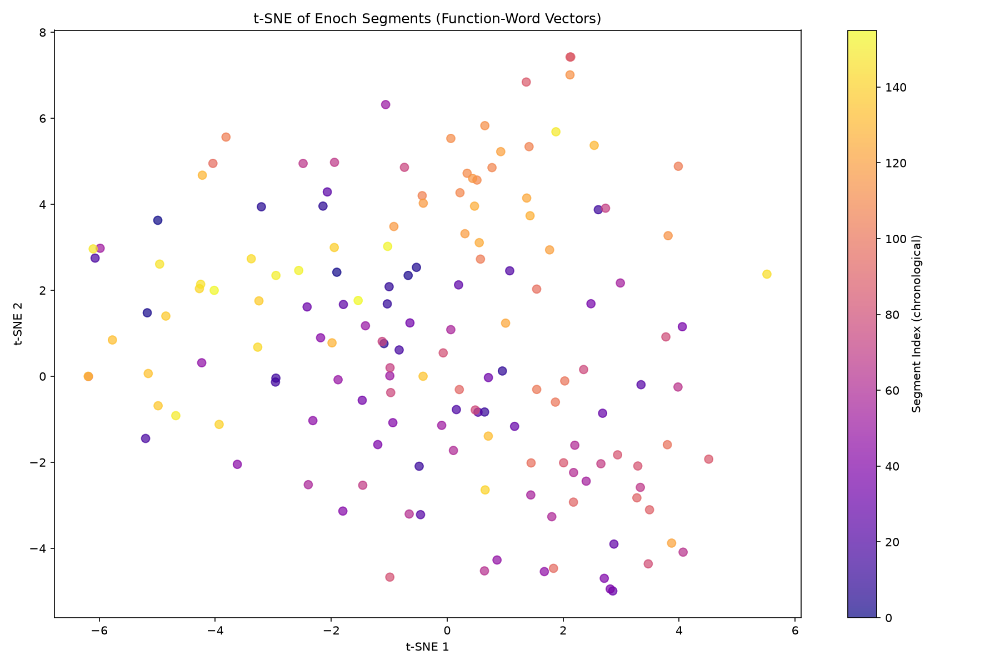

Conceptual Network Mapping • Forensic Stylometry • Lacuna Reconstruction
This dashboard presents the results of a comprehensive computational analysis of ancient religious texts, applying three novel methodological frontiers to reveal hidden connections, authorial signatures, and reconstruct damaged manuscripts. The study spans 6 corpora: KJV Bible, Book of Enoch, Gospel of Thomas, Corpus Hermeticum, Dead Sea Scrolls, and Nag Hammadi Library.
Navigate through the tabs above to explore:
| Corpus | Size | Source | Type |
|---|---|---|---|
| KJV Bible | 24,995 verses | Project Gutenberg | Canonical |
| Book of Enoch | 379 segments | Project Gutenberg | Pseudepigrapha |
| Gospel of Thomas | 88 sayings | Gnosis.org | Nag Hammadi |
| Corpus Hermeticum | 1,175 segments | Public Domain | Hermetica |
| Dead Sea Scrolls | ~1.3 MB | Archive.org (Vermes) | Essene |
| Nag Hammadi Library | ~1.3 MB | Archive.org (Robinson) | Gnostic |
Interactive force-directed graph showing semantic overlap across 6 corpora based on 5 esoteric concept themes. Tip: Open the full graph in a new tab to use drag-and-drop and concept filters.
| Corpus | Angelology | Gnosis | Archons | Dualism | Ascent |
|---|---|---|---|---|---|
| KJV Bible | 295 | 362 | 169 | 9 | 324 |
| Book of Enoch | 62 | 86 | 11 | 0 | 35 |
| Hermetica | 0 | 129 | 80 | 1 | 0 |
| Dead Sea Scrolls | 68 | 180 | 42 | 50 | 59 |
| Nag Hammadi | 67 | 899 | 309 | 15 | 51 |
Analysis of authorial fingerprints in the Book of Enoch through vocabulary distribution, function-word profiling, and burstiness metrics. The clustering reveals potential compositional layers.

Ward linkage dendrogram of 156 Enoch segments based on function-word cosine distance. Vertical cuts at thresholds 0.3, 0.5, and 0.7 reveal potential sub-book boundaries.

Principal Component Analysis of function-word vectors. Color indicates chronological segment index.

t-SNE dimensionality reduction revealing potential stylistic clusters in Enoch.
| Word | Burstiness Score | Interpretation |
|---|---|---|
| spirits | 0.654 | Highly clustered — appears in specific theological sections |
| portal | 0.646 | Clustered in ascent/cosmology passages |
| sheep | 0.615 | Clustered in apocalyptic judgment sections |
| elect | 0.554 | Clustered in eschatological contexts |
| righteous | 0.420 | Moderately clustered in wisdom sections |
Context-aware prediction of missing text in the 1QS Manual of Discipline using BERT masked language modeling. The model analyzes 200-word context windows before and after each lacuna to generate ranked predictions.
BERT Suggestions:
Note: BERT suggestions for this specialized DSS transliteration are limited because the model was trained on standard text.
N-gram Suggestions:
The most significant finding of this research is that vocabulary overlap massively inflates perceived similarity between texts. When using Sentence-Transformers deep embeddings instead of keyword counting, many pairs that appeared highly similar (0.8-0.9) drop to near-zero or negative correlation:
| Text Pair | Keyword Similarity | Deep Semantic Similarity | Difference |
|---|---|---|---|
| Thomas ↔ Nag Hammadi | 0.942 | 0.007 | -0.935 |
| Hermetica ↔ Nag Hammadi | 0.971 | 0.109 | -0.862 |
| KJV ↔ Dead Sea Scrolls | 0.892 | 0.066 | -0.826 |
| Enoch ↔ Nag Hammadi | 0.809 | -0.017 | -0.826 |
| KJV ↔ Enoch | 0.941 | 0.668 | -0.273 |